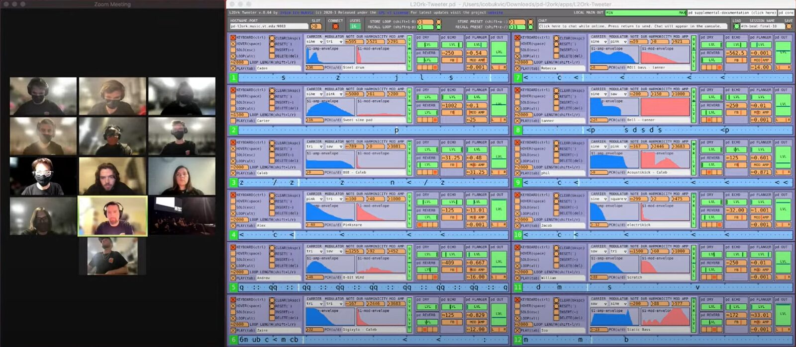
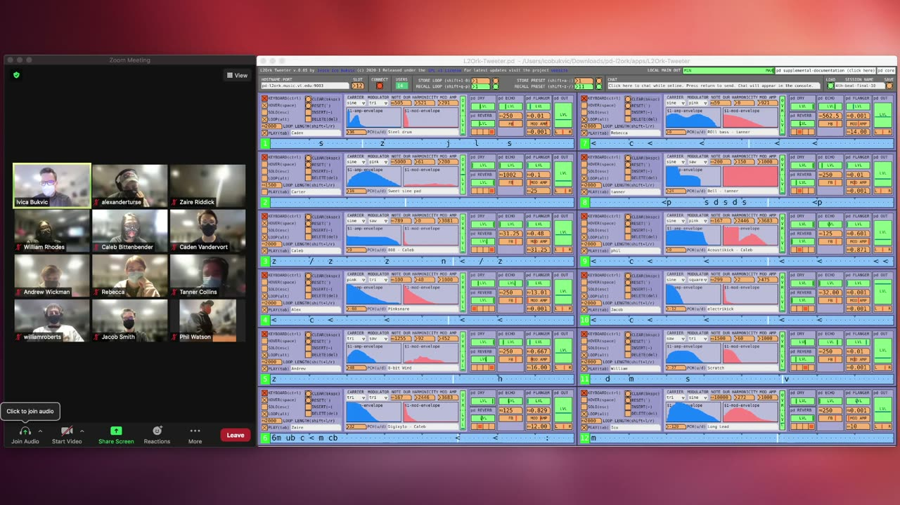

\_-=◢▍ ▋░░▒ ▃▅▇░ (pronounced as "4th beat")
Title
_-=◢▍ ▋░░▒ ▃▅▇░ (pronounced as “4th beat”)
PubPub Link
https://nime.pubpub.org/pub/tb730tds/draft?access=5m38o32c
Project Description
This is a second work submitted for the Tweeter telematic musicking platform developed in response to the COVID-19 pandemic. It reflects the evolution of the platform, the maturation of the emerging aesthetics, and the ensuing complexity, even though the participants were by and large amateur musicians and music enthusiasts. Tweeter enabled uninterrupted operation of the Virginia Tech Linux Laptop Orchestra (L2Ork) throughout the pandemic, while also spawning communities around the world who chose to embrace it for their own telematic collaborations. This, most recent iteration, features 12 performers. Tweeter is uniquely designed to provide a comprehensive support for telematic musicking, including instrument co-creation, improvisation, composition, rehearsal, and performance, as well as audience participation. Its particular focus is on pulse- and pattern-centric tightly-timed musicking that, through the use of control-driven protocol and anticipation of future cues, defies the limits of latency, drift, and bandwidth. Most importantly, Tweeter focuses on the newly coined crowdsourced music genre, where every aspect of creative process and performance is genuinely co-created by multiple stakeholders. The piece was realized in a hybrid environment through a combination of virtual, in-person, and mixed rehearsals.
Type of submission
“NIMEs with a story” - dedicated to NIMEs that have been presented before. This includes new pieces for interfaces that have been previously presented at NIME or outside of NIME.
Requirements
This work is submitted for concert programming consideration and can be performed live telematically or presented as a fixed media video. If accepted to be performed as a fixed media, a non-anonymized version of the video will be provided. Live telematic performance version is contingent on the performer availability (summers are more challenging as the University is not in session). The live version also requires video projection and ideally install of the free open source software on the concert hall computer managing sound for the local high-quality audio reproduction and the ability to show audience what the performers are doing. In addition, the live version calls for the ability to connect to a Zoom session in order to also make performers visible on screen and broadcast both the Zoom and the software on-screen, as shown in the video linked below. No additional hardware is necessary. The output is stereo.
Program Notes
_-=◢▍ ▋░░▒ ▃▅▇░ (pronounced as “4th Beat”) is the Virginia Tech Linux Laptop Orchestra’s (L2Ork) second co-created work written for the L2Ork Tweeter platform that was developed in response to the COVID-19 pandemic. It continues to explore qualities of a pulse-based electronica in a synchronous telematic (online) format while leveraging a unique environment in which each composer-instrument-builder-performer is responsible for a small component of the overall musical fabric. “4th Beat” is absolute in its conception, driven purely by the collaboratively developed musical ideas. Its three-part form is infused with improvisatory sections evocative of a crowdsourced or co-created live DJ session. “4th Beat” leverages Tweeter’s unique ability to defy the latency and sync limitations associated with live online collaborative performance to test creative and technological limits of the ensemble.
Media


Screen capture from the Virginia Tech Cube performance.

▶Video of the performance
Ethics Statement
Tweeter is a free and open source tool available to all. While it does require access to technological affordances (a computer), it is OS-agnostic and can be utilized in both offline and online modes, even though its primary focus is on telematic musicking. The software was developed without any external funding. Works created for the platform are included together with their score with the software’s installer, with the goal of ensuring their sustainability and full reproducibility. Participation of the documented activities was open to all students without any audition or restrictions. No known conflicts of interest exist.
Acknowledgments
This performance features Virginia Tech Linux Laptop Orchestra (L2Ork) performers and co-creators of this particular iteration of the work. They are (listed in alphabetical order): Caleb Bittenbender, Ivica Ico Bukvic, Tanner Collins, Rebecca Kenealy, William Rhodes, Zaire Riddick, Carter Roberts III, Jocob Alan Smith, Alex Turse, Caden Vandervort, Philip Watson, and Andrew Wickman.